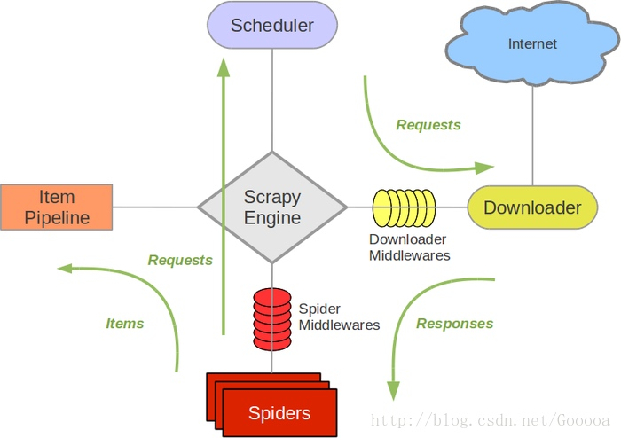

Python3网络爬虫开发实战 - Scrapy框架的使用¶
Scrapy框架介绍¶
Scrapy是一个基于Twisted的异步处理框架，是纯Python实现的爬虫框架，其架构清晰，模块之间的耦合程度低，可扩展性极强，可以灵活完成各种需求。

- Engine。 引擎，处理整个系统的数据流处理、触发事务，是整个框架的核心。
- Item。 项目，它定义了爬取结果的数据结构， 爬取的数据会被赋值成该Item对象。
- Scheduler。 调度器，接受引擎发过来的请求并将其加入队列中，在引擎再次请求的时候将请求提供给引擎。
- Downloader。下载器，下载网页内容，并将网页内容返回给蜘蛛。
- Spiders。 蜘蛛，其内定义了爬取的逻辑和网页的解析规则，结果和新的请求。
- Item Pipeline 。 项目管道， 负责处理由蜘蛛从网页中抽取的项目，它主要负责解析响应并生成提取. 它的主要任务是清洗 、验证和存储数据。
- Downloader Middlewares。 下载器中间件， 位于引擎和下载器之间的钩子框架，主要处理引擎与下载器之间的请求及响应。
- Spide Middlewares。 蜘蛛中间件，位于引擎和蜘蛛之间的钩子框架， 主要处理蜘蛛输入的响应和输出的结果及新的请求。
Scrapy 中的数据流由引擎控制，数据流的过程如下。
- Engine 首先打开一个网站， 找到处理该网站的 Spider ，并向该 Spider 请求第一个要爬取的 URL。
- Engine 从 Spider 中获取到第一个要爬取 的 URL ， 并通过 Scheduler 以 Request 的形式调度 。
- Engine 向 Scheduler 请求下一个要爬取的 URL。
- Scheduler 返回下一个要爬取的 URL 给 Engine , Engine 将 URL 通过 Downloader MiddJewares 转 发给 Downloader 下载。
- 一旦页面下载完毕， Downloader 生成该页面的 Response ， 并将其通过 Downloader Middlewares 发送给 Engine。
- Engine 从下载器中接收到l Response ， 并将其通过 Spider Middlewares 发送给 Spider 处理。
- Spider 处理 Response ， 并返回爬取到的 Item 及新的 Request 给 Engine。
- Engine 将 Spider 返回的 Item 给 Item Pipeline ， 将新的 Request 给 Scheduler。
- 重复第（2）步到第（8 ）步， 直到 Scheduler 中没有更多的 Request , Engine 关闭该网站， 爬取结束。
Scrapy框架是通过命令行来创建项目的，创建之后，项目文件结构如下所示 ：
scrapy.cfg
project/
__init__. py
items.py
pipelines.py
settings.py
middlewares.py
spiders/
init.py
spider1.py
spider2.py
Scrapy入门¶
创建一个Scrapy项目，项目文件可以直接用scrapy命令生成
scrapy startproject projectname
Spider是自己定义的类， Scrapy用它来从网页里抓取内容， 并解析抓取的结果。 不过这个类必须继承Scrapy提供的Spider类scrapy.Spider， 还要定义Spider的名称和起始请求， 以及怎样处理爬取后的结果的方法。
也可以使用命令行创建一个Spider。 比如要生成Quotes这个Spider，可以执行如下命令：
cd projectname scrapy genspider quotes quotes.toscrape.com
genspider命令的第一个参数是Spider的名称， 第二个参数是网站域名。执行完毕之后，spiders文件夹中多了一个quotes.py，它就是刚刚创建的Spider, 内容如下所示：
class QuotesdemoSpider(scrapy.Spider): name = 'quotesdemo' allowed_domains = ['quotes.toscrape.com'] start_urls = ['http://quotes.toscrape.com/'] def parse(self, response): pass
这里有三个属性-- name, allowed_domain, start_urls, 还有一个方法 parse。
- name, 它是每个项目唯一的名字， 用来区分不同的Spider。
- allowed domains, 它是允许爬取的域名，如果初始或后续的请求链接不是这个域名下的，则请求链接会被过滤掉。
- start_urls，它包含了Spider在启动时爬取的url列表， 初始请求是由它来定义的 。
- parse，它是Spider的一个方法。 默认情况下，被调用时start_urls里面的链接构成的请求完成下载执行后， 返回的响应就会作为唯一的参数传递给这个函数。 该方法负责解析返回的响应、提取数据或者进一步生成要处理的请求。